Сообщите этот код разработчику, он пришлёт ключ. Ключ работает только на этом компьютере и открывает обе программы (наладку и STZ).
5К32А
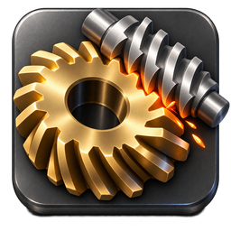
Наладка зубофрезерного полуавтомата
завод «Комсомолец», №7256, 1974 г.ГОСТверсия 1.3.22
Сделано специально по заказу ООО «СпецТехЗаказ» · Рафаил Шарапов · rafail@sharapov-cnc.ru
Загрузить чертёж
Перетащите сюда чертёж (фото, PNG, JPG, PDF)
или нажмите, чтобы выбрать файл · или вставьте картинку из буфера (Ctrl+V)
Чертёж загружен. Теперь напишите Claude в чате одно слово: «чертёж загружен». Он прочитает чертёж, рассчитает деталь, и она сама появится здесь — вверху покажется зелёная плашка «Получена новая деталь».
Загруженные чертежи
…
Связь с «STZ Расчёт зубьев»
Передача шестерни из этой программы в «STZ Расчёт зубьев» (расчёт передачи на прочность, валы, подшипники, чертёж). Данные берутся из открытой детали: модуль, число зубьев, угол наклона, ширина венца, смещение, материал.
Как это работает
Откройте деталь, затем эту вкладку, впишите z₂, мощность и обороты, нажмите «Передать в STZ».
Программа сохранит файл-посылку в «Документы\Зубофреза 5К32А\Обмен».
Напишите Claude в чате: «передай в STZ». Он добавит эту передачу в открытую программу STZ.
В обратную сторону: напишите «возьми из STZ» и название передачи — Claude создаст деталь здесь, в «Мои детали».
Мои детали
Загрузка…
Примеры
Детали лежат в папке «Детали» рядом с программой, каждая — отдельный файл. Новую деталь можно ввести вручную, либо прислать чертёж, и она появится в списке.
Откройте деталь на вкладке «Детали».
Руководство: сталь σ≥60 — черновой 20–25, чистовой 25–30 м/мин (σ≤60: 25–28 и 30–35); подача черновая 2–3 мм/об, чистовая 0,8–1,5 мм/об; скорости даны для встречного фрезерования. Станок подбирает ближайшие ступени из рядов оборотов и подач.
Готовые примеры:
Сделайте расчёт на вкладке «Расчёт» или нажмите один из примеров. Здесь появится пошаговая наладка с вашими числами и рисунками.
Сначала сделайте расчёт на вкладке «Расчёт».
Источник: «Универсальные зубофрезерные станки 5К324А, 5К32А. Руководство», Станкоимпорт (формулы — стр. 33–35, ряды оборотов и подач — стр. 10, комплект колёс — ведомость). Значения ниже взяты оттуда. Сверьте набор колёс с тем, что фактически лежит у станка.
1. Станок по табличке
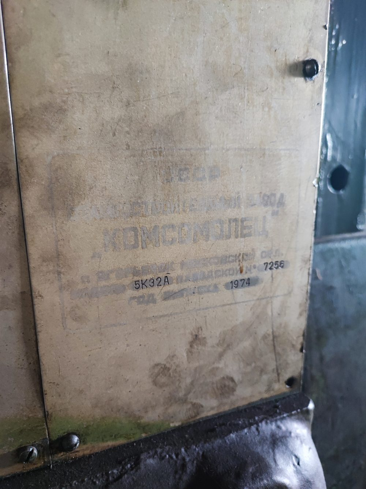
Табличка: Егорьевский станкостроительный завод «Комсомолец»; модель 5К32А, заводской № 7256, год выпуска 1974. На корпусе — инв. № 377325.
5К32А — универсальный зубофрезерный полуавтомат с вертикальной осью стола. Червячная фреза установлена на поворотной головке, заготовка — на столе. Станок механический: связи фрезы, стола, подачи и дифференциала настраиваются сменными зубчатыми колёсами в гитарах, циклами управляют кулачки/упоры и кнопки пульта. УП в понимании ЧПУ у него нет, вместо неё — расчёт колёс и карта наладки (вкладки «Расчёт» и «Карта наладки»).
2. Общий вид и узлы
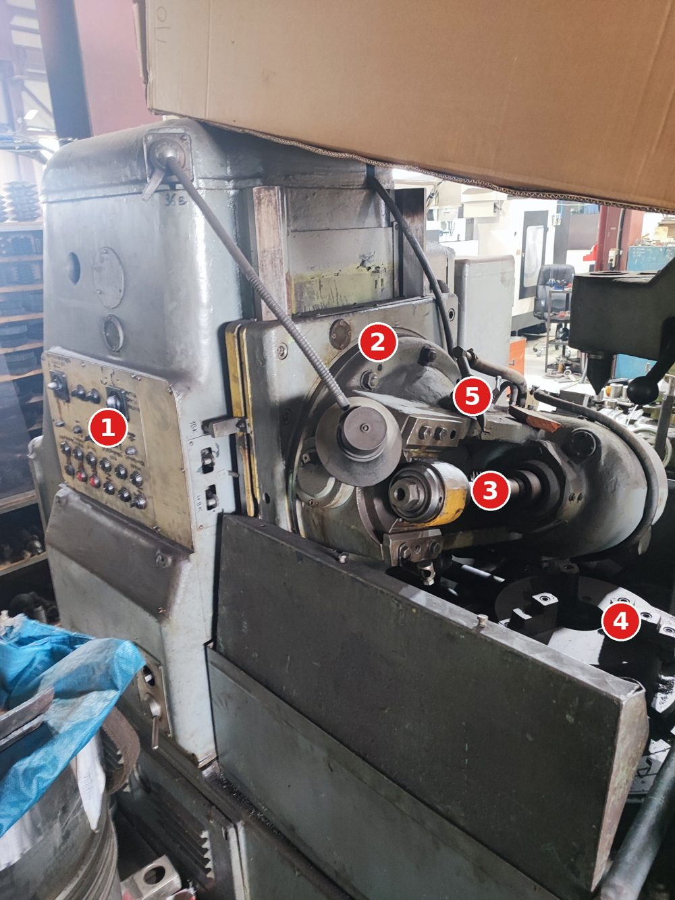
1 пульт управления; 2 поворотная головка (плита с диском и угловой шкалой для установки угла); 3 червячная фреза на оправке; 4 стол с трёхкулачковым патроном; 5 подвод СОЖ.
1 «Переключатель циклов»; 2 переключатель «Метод фрезерования» (встречное/попутное, радиальная/осевая подача — значения положений смотрите по значкам на табличке пульта); 3 блок кнопок: гидронасос, главный привод, ускоренный ход, передвижка фрезы; красные кнопки — по цвету, вероятно «Стоп» (проверить).
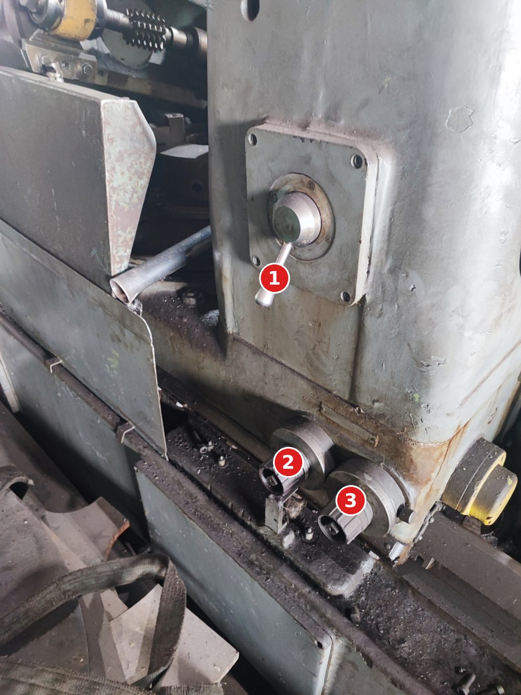
1 рукоятка механизма на стойке; 2, 3 квадраты под рукоятку (ручные перемещения/настройка) — назначение уточнить по паспорту.
4. Гитары: какое колесо на какой вал
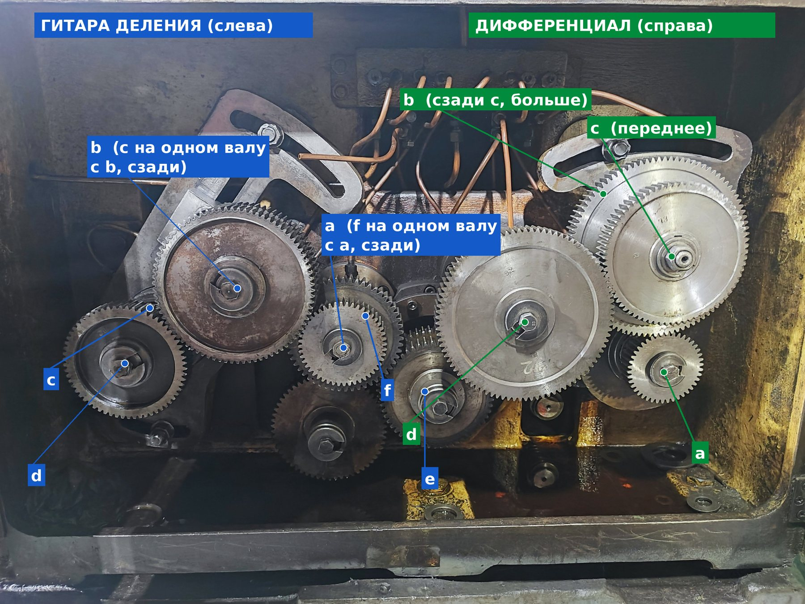
Крышка открыта, две гитары на секторных кронштейнах с пазом. Слева (синее) — гитара деления, справа (зелёное) — гитара дифференциала. Разметка по эскизам руководства: рис. 9 (стр. 11) и рис. 10 (стр. 12). Число зубьев выбито на торце колеса (например «92», «30»). Колёса и гайки крепления меняются вручную.
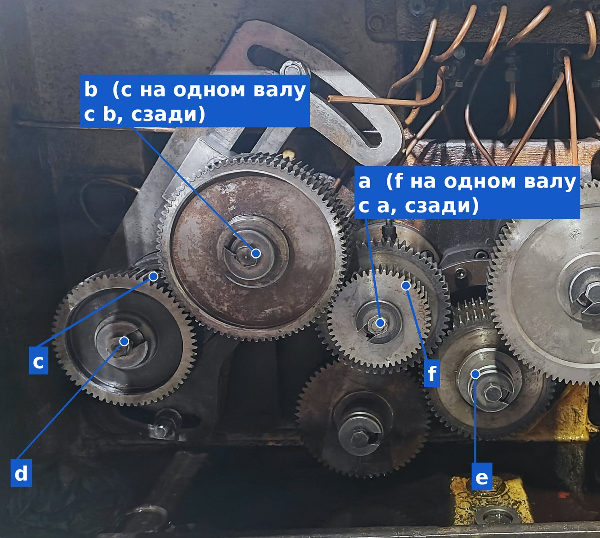
Гитара деления, левый сектор.b — большое колесо на секторе с пазом (вверху), на одном валу с ним сзади стоит c. d — колесо слева внизу (на фото на нём 30), зацепляется с c. a — малое колесо в середине, на одном валу с ним сзади стоит f; a зацепляется с b. e — на валу правее a, зацепляется с f (переброс e:f).
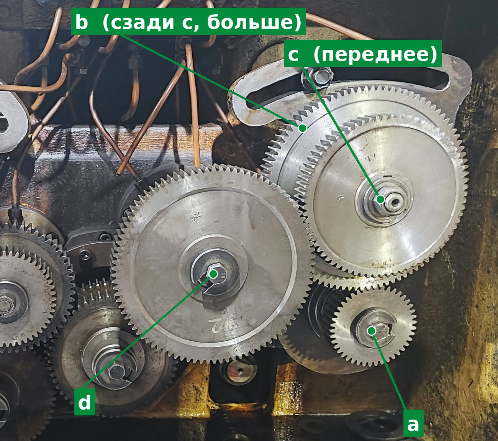
Гитара дифференциала, правый сектор.d — большое колесо в центре, зацепляется с c. c — переднее колесо на секторе с пазом (вверху справа), b — на том же валу сзади, больше диаметром; b зацепляется с a. a — малое колесо справа внизу.
Колесо
Гитара деления (слева)
Гитара дифференциала (справа)
a
малое, в середине; на этом валу сзади f
малое, справа внизу
b
большое наверху на секторе с пазом
на валу с c, сзади, больше
c
на валу с b, сзади него
переднее, на секторе с пазом
d
слева внизу
большое в центре
e, f
переброс: f на валу с a, e правее
нет
Порядок в формуле: числитель a·c, знаменатель b·d. Зацепление: a→b, c→d (на обеих гитарах); в гитаре деления ещё f→e. Колёса, которые снимать не нужно (между секторами и нижнее тёмное), в расчёте не участвуют. Если после установки колёса не встают по межцентровому расстоянию, сдвиньте сектор по пазу и снова затяните гайку.
5. Принципиальная схема кинематики обката
Подача суппорта через дифференциал добавляет к столу поворот при косом зубе. Схема принципиальная, не заводская: показывает, что именно считается в программе. Какое колесо на какой вал ставится, смотрите на фото в разделе 4 (рис. 9 и 10 руководства).
6. Порядок наладки (общий для зубофрезерных станков)
Отключить станок, убедиться что нет движения; шпиндель и стол в исходном положении.
Установить фрезу на оправку: проверить биение шеек и торцевое биение бурта (для 6–7 степени — не более 0,01–0,02 мм), закрепить гайкой.
Выставить угол головки по карте (учитывает угол подъёма витка фрезы и направление зуба).
Выставить фрезу по высоте и в зоне резания по риске / передвижкой так, чтобы работала свежая часть фрезы.
Поставить сменные колёса гитары деления, дифференциала (для косого зуба), подач и скорости по карте. Проверить зазоры между колёсами, затянуть, закрыть крышки.
Установить заготовку на оправку/патрон, проверить биение базового торца и посадочной шейки (индикатор), закрепить.
Выставить упоры хода по высоте детали с учётом врезания и перебега, выбрать метод фрезерования и цикл переключателями.
Прогнать холостой цикл без заготовки или с пробной, проверить направления вращения.
Обработать пробную деталь/участок, проконтролировать зуб (длина общей нормали, толщина по постоянной хорде или по роликам, направление и шаг зуба), скорректировать глубину.
Чистовой проход делать после замера чернового; при единичном производстве подачу чистового не завышать.
7. Из руководства Станкоимпорт (5К324А, 5К32А)
В руководстве есть всё для наладки колёс. Вот главное из него, а ниже — сами страницы.
Паспортные пределы 5К32А
Наибольший модуль
10 мм
Диаметр колёс
прямозубые до 800 мм; косозубые при 30° — 500, при 45° — 350, при 60° — 120…250 мм
Длина венца
прямозубые до 350 мм; косозубые при 30° — 200, 45° — 150, 60° — 130 мм
Число зубьев, угол
от z = 12; угол наклона до ±60°
Фреза
диаметр до 200 мм, оправки Ø32 и Ø40, конус шпинделя Морзе 5, осевое перемещение фрезы 80 мм
Стол
Ø630 мм, расстояние ось стола — ось фрезы 80…500 мм
В руководстве есть готовая таблица деления для z = 12…200 (однозаходная фреза), а для дифференциала таблиц нет — подбор рекомендуется делать по справочнику Петрика и Шишкова. Это и считает программа. Расчёт деления я сверил с таблицей руководства: для каждого z из неё программа находит решение из того же набора. Кроме того, программа находит решение ещё для z = 29, 31, 121, 143, 148, 169, 185, 189, которых в таблице руководства нет. По ним проверяйте посадку колёс.
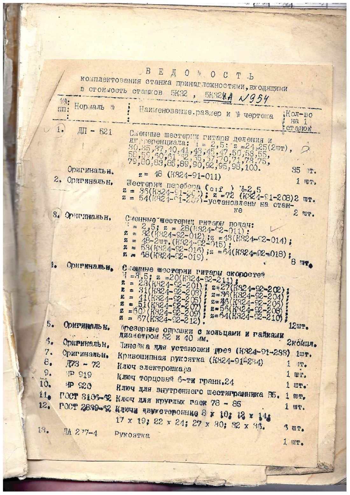
Ведомость комплектации: наборы сменных колёс гитар деления/дифференциала, подач и скоростей.
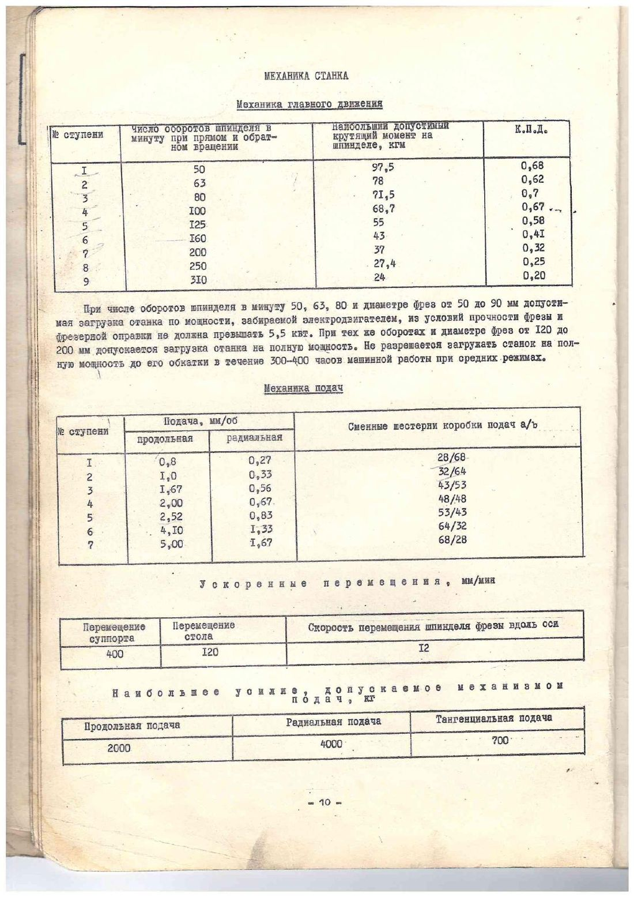
Стр. 10: ряды оборотов и подач, колёса коробки подач.
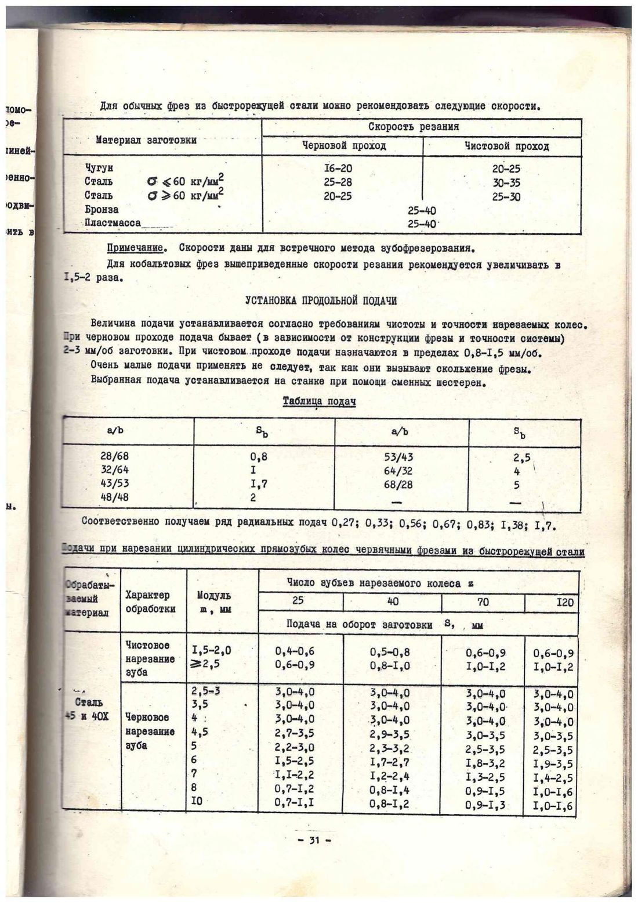
Стр. 31: рекомендуемые скорости резания и подачи по модулю и числу зубьев.
Таблица настройки гитары деления, z = 12…200 (a, b, c, d). Пустые b, c — два колеса a/d.
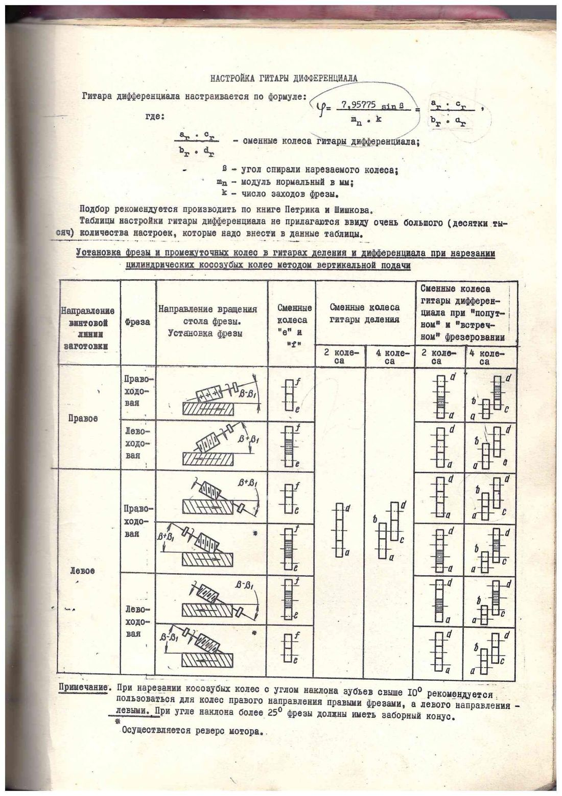
Стр. 35: настройка дифференциала, установка фрезы и промежуточных колёс при косом зубе. Реверс мотора в отмеченных случаях.
Числа в программе взяты из руководства. Режимы резания — рекомендации руководства для фрез из быстрореза, их надо корректировать по конкретному инструменту. Перед запуском проверьте холостой ход и пробную деталь.